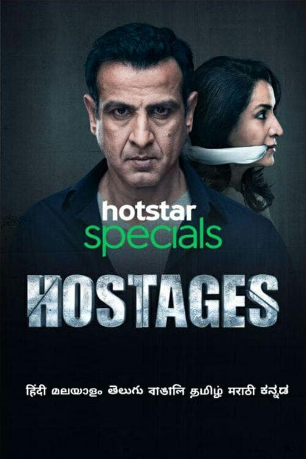

HOSTAGES

Ratings
IMDb: 6.8/10
Movie Matrix: 7.5/10
Getting locked up in our own houses on the gun peaks is what " HOSTAGES " thrills you about. Another crime thriller, action packed hotstar special that will tie you up with its plot the entire time. Start watching and you will have no idea when you enter the series forgetting every other aspect around you.
A special production of HOTSTAR , HOSTAGES brings to you a crime thriller plot along with a suspense and action packed sequence, containing a total of 10 episodes extending upto a duration of approximately 40 minutes, HOSTAGES was released in 2019. Directed by “ Sudhir Mishra “ and having “ Ronit Roy “ , “ Tisca Chopra “ , “ Dalip Tahil “ , and many others giving an extraordinary performance, the series win most hearts .
The plot revolves around the situation where a well known surgeon “ Dr. Mira Anand “ is made hostage in her own house along with the entire family and is thus compelled to fulfil the demands of the dacoits in the hope to save her family. The series throughout remains in a very depressed and stressfull atmosphere, moreover, the eye attracting realistic expressions of Ronit Roy, will hook you the entire series. The series also binds up its viewers containing a crucial turning point/suspense , that turns the tables in no time.
Thus, Hotstar once again stands on its viewers hopes and came with a content worth watching. In the Indian Cinema of Web Series the plot/script matter the most but on the same hand, the extraordinary talent of the actors , make the content even worth watching.
So, one must try out these series and boost up the mind as an investigator. Taking you to different aspects these series also teach you many life lessons, that a good viewer always picks up.
Go then, watch them out.
ABOUT THE AUTHOR